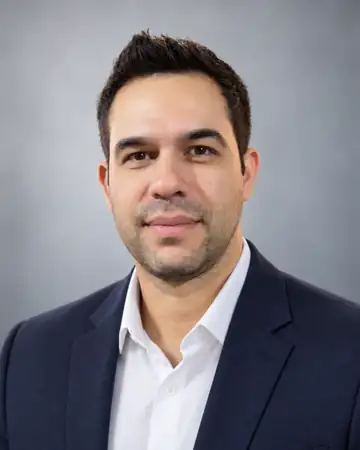
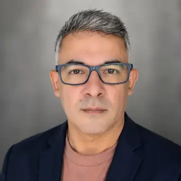

A
AVCB
Diagnóstico, documentação, adequações e acompanhamento do processo de vistoria e regularização.
Assessoria para AVCB, CLCB, licenças, laudos, PTS e adequações, com acompanhamento técnico do diagnóstico à conclusão do processo. Engenharia responsável, processo organizado e cliente bem orientado.
Núcleo técnico: William Silva • Engenheiro Civil • Responsável Técnico
Protocolar no enquadramento errado, comprar itens sem dimensionamento ou chegar à vistoria com pendências gera retrabalho, atraso e custo desnecessário.
O documento correto depende do imóvel, atividade, ocupação e riscos. Primeiro definimos o enquadramento; depois o escopo.
Diagnóstico, documentação, adequações e acompanhamento do processo de vistoria e regularização.
Triagem de enquadramento, organização documental e condução do processo simplificado quando aplicável.
Enquadramento do Projeto Técnico Simplificado e apoio à documentação técnica exigida.
Levantamento de desconformidades, documentos faltantes e prioridades antes de comprar ou protocolar.
Laudos, relatórios, atestados, memoriais e demais documentos técnicos conforme o caso e o escopo.
Organização do plano de correção, interface com fornecedores e conferência das evidências de execução.
Processo objetivo, rastreável e com responsabilidade definida.
Atividade, área, pavimentos, ocupação, público e histórico de licença.
Enquadramento, documentos, sistemas existentes e pendências.
Engenharia, documentação, adequações, fornecedores e sequência.
Conferência das entregas e evidências para reduzir retrabalho.
Condução administrativa e técnica conforme o tipo de processo.
Organização de documentos, validade e preparação para renovação.
William conduz o núcleo técnico. Francisco organiza operação, documentação, atendimento e acompanhamento.

Engenheiro Civil • Responsável Técnico. Conduz análises, vistorias, documentação e serviços de engenharia dentro de suas atribuições profissionais, com ART quando aplicável ao escopo.

Organiza atendimento, escopo, documentação, prazos, fornecedores e acompanhamento para transformar uma exigência técnica em um fluxo claro e rastreável.
Não. São formas diferentes de licença do Corpo de Bombeiros. O enquadramento depende das características da edificação, ocupação e riscos, não apenas da metragem.
Não. Podemos diagnosticar, organizar adequações, preparar documentação e acompanhar tecnicamente o processo, mas a emissão depende do atendimento aos requisitos e da avaliação do órgão competente.
O ideal é diagnosticar primeiro. Quantidade, tipo e localização devem ser definidos conforme o enquadramento e as condições do imóvel.
Não necessariamente. Quando o serviço exigir responsabilidade profissional, a ART é emitida pelo Engenheiro Civil Responsável Técnico para o escopo contratado, desde que compatível com suas atribuições.
Sim. Mudanças de layout, atividade, equipamentos e manutenção dos sistemas são verificadas antes do novo processo.
Informe os dados principais do imóvel e gere um briefing para a triagem inicial.